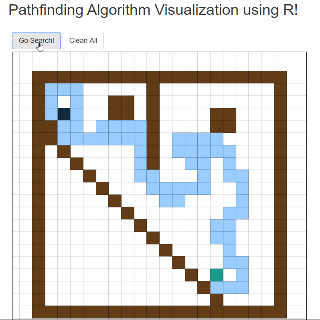

Pathfinding Algorithms Visualizer using R! (I) Setting up the interactive grid
Setting up the interactive grid with R Shiny and ggplot! Trial with some kind of random-walker algorithm.

Here you can find the R code. It’s an ‘in progress’ script. I will develop basic features like:
ploting/rendering code refactoring;
GGanimate with the algortihm steps moving forward;
and, of course, several pathfinding algorithms and evolutionary ones.
All these features and much more in following posts! Stay tuned!
library (shiny)
library (ggplot2)
library (tidyverse)
source("helpers/ColourBorders.R")
source("helpers/PlotMapGrid.R")
ui <- fluidPage(
mainPanel(
column(12,offset = 5,
titlePanel("Pathfinding Algorithm Visualization using R!")),
HTML(" "),
column(12,offset = 5,HTML(" "),
actionButton("go_search_actionButton", "Go Search!"),
actionButton("clean_all_actionButton", "Clean All")),
HTML(" "),
column(12,offset=5, plotOutput("map_grid_plotOutput",
click="map_grid_plotOutput_click"))
))
server <- function(input, output){
## Initial params
max_steps <- 50
matrix_x_size <- 20
matrix_y_size <- 20
grid_map_reactive <- matrix(ncol = matrix_x_size,
nrow = matrix_y_size,
data = 0)
## Colours Dict (in progress)
# 1- Wall
# 2- Init
# 3- Obj
# 4- Step done
# 5- Goal achieved
# Initialize objts
grid_map_reactive[4,15] <- 3 # obj
grid_map_reactive[17,3] <- 2 # init
initial_step <- which(grid_map_reactive == 2,
arr.ind = TRUE)
grid_map_reactive <- ColourBorders(grid_map_reactive, 1) # rounding walls
react_df <- reactiveValues(df = grid_map_reactive,
orig = grid_map_reactive,
walls = grid_map_reactive)
observe({
if(!is.null(input$map_grid_plotOutput_click)){
new_x_value <- trunc(input$map_grid_plotOutput_click$x)
new_y_value <- trunc(input$map_grid_plotOutput_click$y)
if(between(new_x_value,2,matrix_x_size-1) & between(new_y_value,2,matrix_y_size-1)){
isolate(react_df$df[new_y_value,new_x_value] <- if_else(react_df$df[new_y_value,new_x_value]==0,
1,0))
isolate(react_df$df[4,15] <- 3)
isolate(react_df$df[17,3] <- 2)
isolate(react_df$df[17,3] <- 2)
isolate(react_df$walls <- react_df$df)
output$map_grid_plotOutput <- renderPlot({
PlotMapGrid(react_df$df,
matrix_x_size,
matrix_y_size)
}, width=600, height=600,position="center")
}}
})
# Go search! Pseudo-random pathfinding algortihm
observeEvent(input$go_search_actionButton,{
if(nrow(which(react_df$df == 4, arr.ind = TRUE))>=1) react_df$df <- react_df$walls # click search without clean
current_step <- initial_step
obj <- which(react_df$df == 3, arr.ind = TRUE)
previous_steps_with_opt <- current_step
for(i in 1:max_steps){
next_step_col <- tribble(~row, ~col,
current_step[1]+1,current_step[2]+0,
current_step[1]+0,current_step[2]+1,
current_step[1]-1,current_step[2]+0,
current_step[1]+0,current_step[2]-1)
next_values <- NULL
for(r in 1:nrow(next_step_col)){
next_values <- c(next_values,
react_df$df[next_step_col[[r,1]],
next_step_col[[r,2]]])
}
if(3 %in% next_values){
current_step <- next_step_col[next_values==3,] %>%
as.matrix()
react_df$df[current_step] <- 5
break()
} else if(0 %in% next_values){
if(sum(next_values==0)>1){
previous_steps_with_opt <- current_step
}
current_step <- next_step_col[next_values==0,] %>%
sample_n(1) %>%
as.matrix()
react_df$df[current_step] <- 4
} else {
current_step <- previous_steps_with_opt
}
}
})
# Reset all
observeEvent(input$clean_all_actionButton,{
react_df$df <- react_df$orig
react_df$walls <- react_df$orig
})
# First panel
output$map_grid_plotOutput <- renderPlot({
PlotMapGrid(react_df$df,
matrix_x_size,
matrix_y_size)
}, width=550, height=600,position="center")
}
shinyApp(ui=ui, server = server)Here the helpers:
ColourBorders <- function(df, col_value){
## Rounding walls
# Params: df - Map grid
# col_value - Colour to fill the rounding blocks
# Return: df with the filled roundings
df[1,] <- col_value
df[,1] <- col_value
df[nrow(df),] <- col_value
df[,ncol(df)] <- col_value
return(df)
}
PlotMapGrid <- function(df, matrix_x_size, matrix_y_size){
## Plot the interactive grid
# Params: df - Map grid
# matrix_x_size - X_axis limit
# matrix_y_size - Y_axis limit
# Return: plot with the pathfinding
plot <- rbind(
which(df== 1, arr.ind = TRUE) %>% cbind(fill_col="#623B17"),
which(df == 2, arr.ind = TRUE) %>% cbind(fill_col="#13293D"),
which(df == 3, arr.ind = TRUE) %>% cbind(fill_col="#ffff66"),
which(df == 4, arr.ind = TRUE) %>% cbind(fill_col="#99ccff"),
which(df == 5, arr.ind = TRUE) %>% cbind(fill_col="#1B998B")
) %>%
data.frame(stringsAsFactors = F) %>%
transmute(y = as.numeric(row), x = as.numeric(col), fill_col=fill_col) %>%
ggplot(aes(x+0.5,y+0.5)) +
geom_tile(width = 1, height = 1, fill = df$fill_col, col="black") +
scale_y_reverse() +
scale_x_continuous(breaks = seq(0, matrix_x_size, 1),
limits = c(0+0.5, matrix_x_size+1.5),
minor_breaks = NULL) +
scale_y_continuous(breaks = seq(0, matrix_y_size, 1),
limits = c(0+0.5, matrix_y_size+1.5),
minor_breaks = NULL) +
theme_linedraw()+
theme(axis.title.x=element_blank(),
axis.title.y=element_blank(),
axis.text.x=element_blank(),
axis.text.y=element_blank(),
axis.ticks.x=element_blank(),
axis.ticks.y=element_blank())
return(plot)
}Carlos Vecina
Data Scientist & TechLead at Bankinter
Data Scientist & TechLead at Bankinter | AI & Data Science for Business